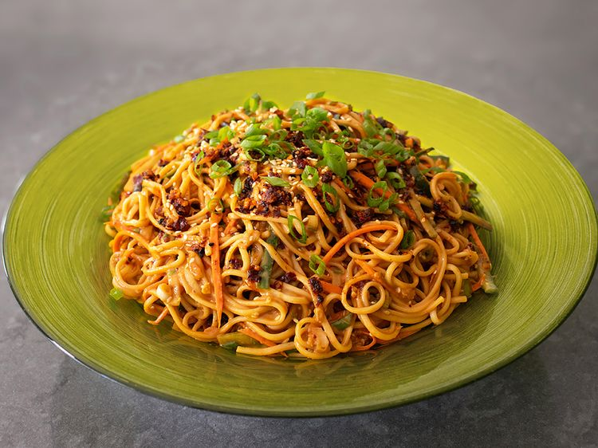

Ingredients
Directions
step 1
Bring a large pot of salted water to a boil, and add noodles. Cook, stirring occasionally, for 6 to 7 minutes, or according to package directions.
step 2
Meanwhile, add peanut butter, soy sauce, Chinese black vinegar, rice wine vinegar, garlic, ginger, sugar, and sesame oil to a large bowl, and whisk briefly to break up the peanut butter. Use a ladle to transfer in boiling hot noodle water, and whisk until smooth. Add chili crisp, and whisk to combine.
step 3
TDrain cooked noodles into a colander, and transfer back into the pot. Fill with cold water, then drain again. Return to the pot and fill with cold water again; swish noodles with your hand to rinse off the surface starch. Let noodles sit in cold water for a few minutes while you slice the vegetables.
step 4
Use a vegetable grater to julienne the carrot. Cut cucumber into 3-inch pieces and julienne also. Slice green onions.
step 5
Drain the cold noodles well, and add to the dressing, along with carrot, cucumber, green onions, and sesame seeds. Toss thoroughly until everything is evenly combined. Noodles can be served right away, but for best results, cover and chill for 1 hour, up to overnight.
step 6
Serve with more chili crisp dolloped over the top.
